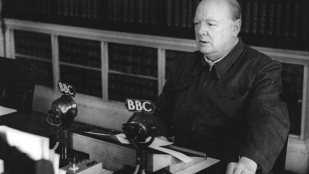
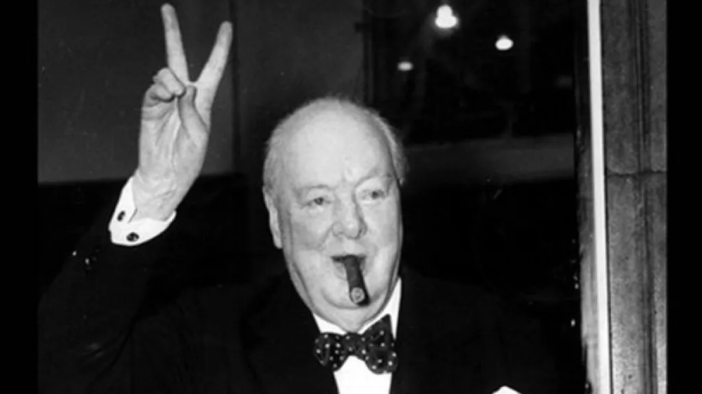

Galerie


- podpis Winston Churchill
Sir Winston Churchill byl britský státník, voják a spisovatel, který se stal ikonickým premiérem během druhé světové války.
Narodil se v Blenheimském paláci.
Zajetí a útěk během války v Jižní Africe.
Jmenován premiérem během 2. světové války.
Zemřel ve věku 90 let.
Výběr nejslavnějších projevů s analýzou.
Popis Churchillových zahraničních cest.
Životopisné střípky mimo politiku.